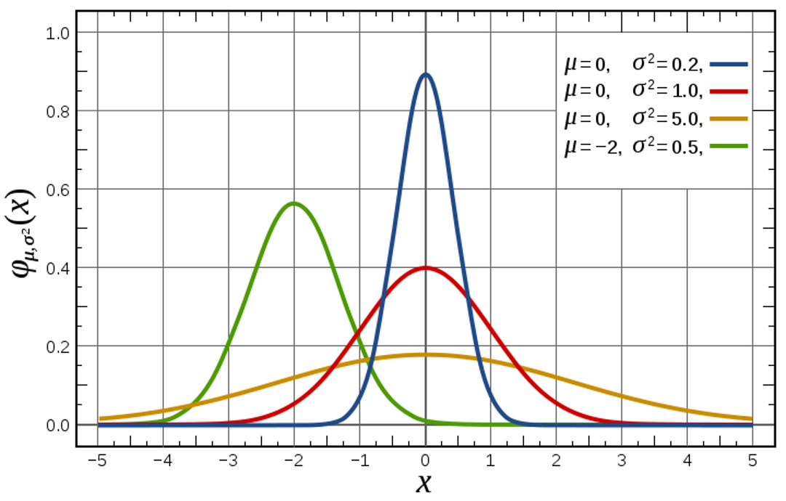
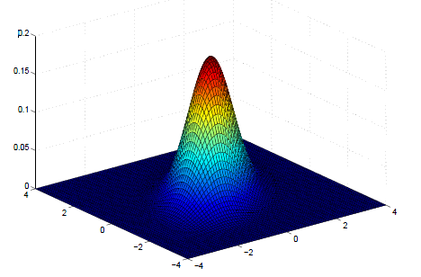
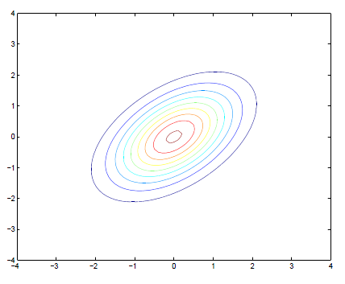
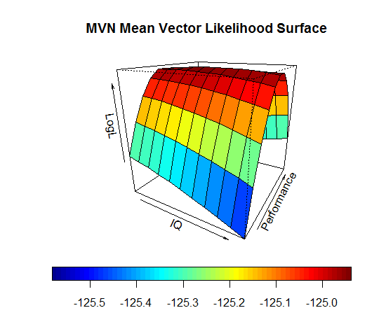
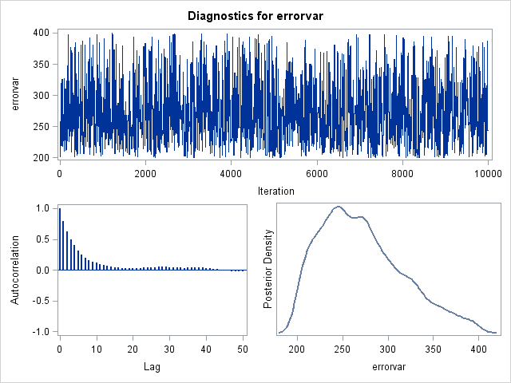
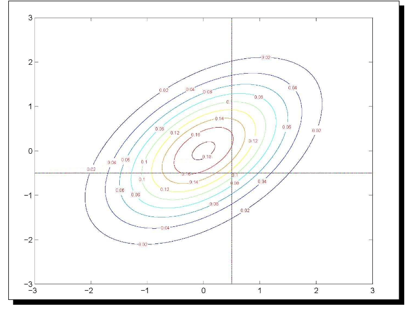
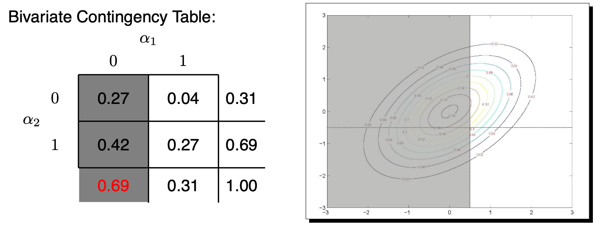
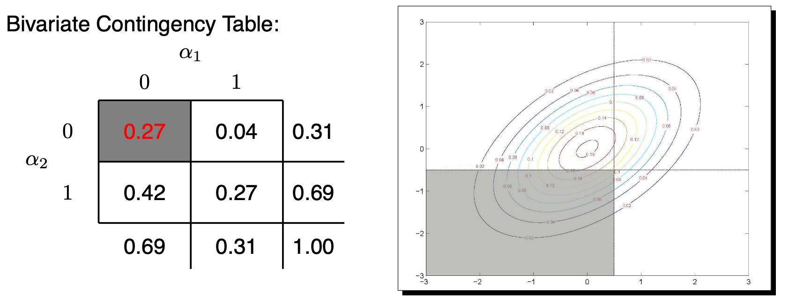

Estimation of Multidimensional Measurement Models
Today’s Lecture
- General estimation methods:
- Maximum likelihood estimation
- Marginal maximum likelihood estimation
- Full information methods
- Limited information methods
- Optimization
- MML Estimation of the CFA model
- Limited information methods in IRT
- Full information methods in IRT
- MML via Quasi Newton methods
- Numeric integration
- Monte Carlo integration
- Numeric integration
- MML via EM algorithm
- EM algorithm with hybrid versions for the E-step (Robbins Monro Algorithm)
- Bayesian estimation in varying software packages
- MML via Quasi Newton methods
Notes
- JAGS doesn’t estimate standardized factors very easily
Programs
- Mplus
- lavaan
- mirt
- JAGS
- stan
Methods
- MML CFA
- Bayesian
- Limited information
- MML-EM
- MML-Quasi Newton
- MML-Stochastic
A Primer on Maximum Likelihood Estimation
- An introduction to maximum likelihood estimation
- How it works
- Why we use it: properties of MLEs
- Robust maximum likelihood for MVN outcomes
- Augmenting likelihood functions for data that aren’t quite MVN
- Incorporating missing data using maximum likelihood
- Extending the nice properties of ML
Why Estimation is Important
- In “applied” stat courses estimation not often discussed
- Can be very technical (and very intimidating)
- Estimation is of critical importance
- Quality and validity of estimates (and of inferences made from them) depends on how they were obtained
- Consider an absurd example:
- I say the mean for IQ should be 20 – just from what I feel
- Do you believe me? Do you feel like reporting this result?
- Estimators need a basis in reality (in statistical theory)
How Estimation Works (More or Less)
Most estimation routines do one of three things:
Minimize Something: Typically found with names that have “least” in the title. Forms of least squares include “Generalized”, “Ordinary”, “Weighted”, “Diagonally Weighted”, “WLSMV”, and “Iteratively Reweighted.” Typically the estimator of last resort due to less desirable properties than ML estimators.
Maximize Something: Typically found with names that have “maximum” in the title. Forms include “Maximum likelihood”, “Marginal Maximum Likelihood”, “Residual Maximum Likelihood” (REML), “Robust ML”. Typically the gold standard of estimators.
Use Simulation to Sample from Something: more recent advances in estimation use sampling techniques. Names include “Bayesian Markov Chain Monte Carlo”, “Gibbs Sampling”, “Metropolis Hastings”, “Hamiltonian Monte Carlo”, and just “Monte Carlo”. Used for complex models where ML is not available or for methods where prior values are needed.
Properties of Maximum Likelihood Estimators
Provided several assumptions (also called regularity conditions) are met, maximum likelihood estimators have good statistical properties:
Asymptotic Consistency: as the sample size increases, the estimator converges in probability to its true value
Asymptotic Normality: as the sample size increases, the distribution of the estimator is normal (with variance given by the inverse information matrix)
Efficiency: No other estimator will have a smaller standard error
Because they have such nice and well understood properties, MLEs are commonly used in statistical estimation
Maximum Likelihood: Estimates Based on Statistical Distributions
- Maximum likelihood estimates come from statistical distributions – assumed distributions of data
- We will begin today with the univariate normal distribution but quickly move to other distribution
For a single random variable \(x \sim N\left( \mu_x, \sigma^2_x \right)\), the univariate normal probability density function (PDF) is
\[f(x) = \frac{1}{\sqrt{2\pi\sigma^2_x}} \exp \left(- \frac{\left(x-\mu_x \right)^2}{2\sigma^2_x} \right)\]
- This function takes \(x\), \(\mu_x\), and \(\sigma^2_x\) as inputs and returns the height of the pdf (the likelihood)
Univariate Normal Distribution
For values of \(x\), \(\mu_x\), and \(\sigma^2_x\), \(f(x)\) gives the height of the curve (the likelihood; like a relative frequency)
Example Distribution Values
- Let’s examine the distribution values for the a variable with \(\mu_x=100\) and \(\sigma_x^2=189.6\)
- Later we will not know what these values happen to be
- For \(x=100\), \(f(100)\) is 0.0290
- For \(x=80\), \(f(80)\) is 0.0101
Constructing a Likelihood Function
- Maximum likelihood estimation begins by building a likelihood function
- A likelihood function provides a value of a likelihood (think height of a curve) for a set of statistical parameters
- Likelihood functions start with probability density functions (PDFs) for each variable being modeled
- Density functions are provided for each observation individually (marginal)
- The likelihood function for the entire sample is the function that gets used in the estimation process
- The sample likelihood can be thought of as a joint distribution of all the observations, simultaneously
- Observations are often considered independent, so the joint likelihood for the sample is constructed through a product
- To demonstrate, let’s consider the likelihood function for one observation
A One-Observation Likelihood Function
- Let’s assume the following:
- We have observed IQ (for the person where \(x=112\))
- That IQ comes from a normal distribution
- That the variance of 𝑥 is known to be 189.6 (\(\sigma_x^2=189.6\))
- This is to simplify the likelihood function so that we only don’t know one value
- This is an example of empirical under-identification
- For this one observation, the likelihood function takes its assumed distribution and uses its PDF:
\[f(x) = \frac{1}{\sqrt{2\pi\sigma^2_x}} \exp \left(- \frac{\left(x-\mu_x \right)^2}{2\sigma^2_x} \right)\]
- The PDF above now is expressed in terms of the three unknowns that go into it: \(x\), \(\mu_x\), and \(\sigma^2_x\)
A One-Observation Likelihood Function
- Because we know two of these terms (\(x=112\); \(\sigma_x^2=189.6\)), we can create the likelihood function for the mean:
\[L \left(\mu_x \mid x = 112, \sigma_x^2 = 189.6 \right) = \frac{1}{\sqrt{2\pi * 189.6}} \exp \left(- \frac{\left(112-\mu_x \right)^2}{2*189.6} \right) \]
- For every value of \(\mu_𝑥\) could be, the likelihood function now returns a number that is called the likelihood
- The actual value of the likelihood is not relevant (yet)
- The value of \(\mu_x\) with the highest likelihood is called the maximum likelihood estimate (MLE)
- For this one observation, what do you think the MLE would be?
- This is asking: what is the most likely mean that produced these data?
The MLE is…
- The value of \(\mu_x\) that maximizes \(L\left(\mu_x \mid x, \sigma_x^2 \right)\) is \(\hat{\mu}_x = 112\)
- The value of the likelihood function at that point is \(L\left(112 \mid x, \sigma_x^2 \right) = .029\)
From One Observation…To The Sample
- The likelihood function shown previously was for one observation, but we will be working with a sample
- Assuming the sample observations are independent and identically distributed, we can form the joint distribution of the sample
- For normal distributions, this means the observations have the same mean and variance
- Assuming the sample observations are independent and identically distributed, we can form the joint distribution of the sample
\[L \left( \mu_x, \sigma^2_x \mid x_1, \ldots, x_N \right) = L \left( \mu_x, \sigma^2_x \mid x_1\right) \times L \left( \mu_x, \sigma^2_x \mid x_2\right) \times \ldots L \left( \mu_x, \sigma^2_x \mid x_N\right)\]
\[ = \prod_{p=1}^N f\left(x_p\right) = \prod_{p=1}^N = \frac{1}{\sqrt{2\pi\sigma^2_x}} \exp \left(- \frac{\left(x-\mu_x \right)^2}{2\sigma^2_x} \right) = \]
\[\left( 2\pi \sigma_x^2 \right)^{\left(- \frac{N}{2} \right)} \exp \left( - \sum_{p=1}^N \frac{\left(x_p - \mu_p \right)^2}{2\sigma_x^2} \right) \]
- Multiplication comes from independence assumption:
- Here, \(L \left( \mu_x, \sigma^2_x \mid x_p\right)\) is the univariate normal PDF
Maximizing the Log Likelihood Function
- The process of finding the values of \(\mu_x\) and \(\sigma_x^2\) that maximize the likelihood function is complicated
- What was shown was a grid search: trial-and-error process
- For relatively “simple” functions, we can use calculus to find the maximum of a function mathematically
- Problem: not all functions can give closed-form solutions (i.e., one solvable equation) for location of the maximum
- Solution: use efficient methods of searching for optimal parameter values (i.e., Newton-Raphson)
- Here, “optimal” means the value that maximizes the likelihood function
Newton Raphson Methods
- A root-finding algorithm
- We need the root of the first derivative of the likelihood function
- The algorithm begins with an initial guess of the root \(x_n\), then:
\(x_{n+1} = x_n - \frac{f\left(x_n\right)}{f'\left(x_n\right)}\)
- If matrix of derivatives is provided, then the algorithm will find the root numerically
- Called Quasi-Newton methods
- See R’s
optimfunction

Standard Errors: Using the Second Derivative
- Although the estimated values of the sample mean and variance are needed, we also need the standard errors
- For MLEs, the standard errors come from the information matrix, which is found from the square root of -1 times the inverse matrix of second derivatives (only one value for one parameter)
- Second derivative gives curvature of log-likelihood function
- This matrix comes from asymptotic theory (i.e., as sample size increases)
$# ML with the Multivariate Normal Distribution
- The example from the first part of class focused on a single variable from a univariate normal distribution
- We typically have multiple variables (\(V\)) from a multivariate normal distribution
\[f \left( \boldsymbol{x}_p \right) = \frac{1}{\left(2 \pi \right)^{\frac{V}{2}} \mid \boldsymbol{\Sigma} \mid^{\frac{1}{2}}} \exp \left[ - \frac{\left( \boldsymbol{x}_p^T - \boldsymbol{\mu }\right)^T \boldsymbol{\Sigma}^{-1}\left( \boldsymbol{x}_p^T - \boldsymbol{\mu }\right)}{2} \right] \]
The Multivariate Normal Distribution
\[f \left( \boldsymbol{x}_p \right) = \frac{1}{\left(2 \pi \right)^{\frac{V}{2}} \mid \boldsymbol{\Sigma} \mid^{\frac{1}{2}}} \exp \left[ - \frac{\left( \boldsymbol{x}_p^T - \boldsymbol{\mu }\right)^T \boldsymbol{\Sigma}^{-1}\left( \boldsymbol{x}_p^T - \boldsymbol{\mu }\right)}{2} \right] \]
- The mean vector is \(\boldsymbol{\mu} = \left[ \mu_{x_1}, \mu_{x_2}, \ldots, \mu_{x_V} \right]^T\)
- The covariance matrix is
\[\boldsymbol{\Sigma} = \begin{bmatrix} \sigma_{x_1}^2 & \sigma_{x_1x_2} & \ldots & \sigma_{x_1x_V} \\ \sigma_{x_2x_1} & \sigma_{x_2}^2 & \ldots& \sigma_{x_2x_V} \\ \vdots & \ddots & \ddots & \vdots \\ \sigma_{x_Vx_1} & \sigma_{x_Vx_2} & \ldots& \sigma_{x_V}^2 \\ \end{bmatrix} \]
- The covariance matrix must be non-singular (invertible)
- Positive semi-definite (all eigenvalues are positive)
Multivariate Normal Density Plot
\[ \boldsymbol{\mu} = \begin{bmatrix} \mu_{x_1} \\ \mu_{x_2} \\ \end{bmatrix} = \begin{bmatrix} 0 \\ 0 \\ \end{bmatrix} ; \boldsymbol{\Sigma} =\begin{bmatrix} \sigma_{x_1}^2 & \sigma_{x_1, x_2} \\ \sigma_{x_1, x_2} & \sigma_{x_2}^2 \\ \end{bmatrix} = \begin{bmatrix} 1 & 0.5 \\ 0.5 & 1 \\ \end{bmatrix} \]
Multivariate Normal Contour Plot
\[ \boldsymbol{\mu} = \begin{bmatrix} \mu_{x_1} \\ \mu_{x_2} \\ \end{bmatrix} = \begin{bmatrix} 0 \\ 0 \\ \end{bmatrix} ; \boldsymbol{\Sigma} =\begin{bmatrix} \sigma_{x_1}^2 & \sigma_{x_1, x_2} \\ \sigma_{x_1, x_2} & \sigma_{x_2}^2 \\ \end{bmatrix} = \begin{bmatrix} 1 & 0.5 \\ 0.5 & 1 \\ \end{bmatrix} \]
Example Distribution Values
- Let’s examine the distribution values for the both variables
- We assume that we know \(\mu = \begin{bmatrix} 100 \\ 10.35 \end{bmatrix}\) and \(\boldsymbol{\Sigma} = \begin{bmatrix} 189.6 & 19.5 \\ 19.5 & 6.8 \end{bmatrix}\)
- We will not know what these values happen to be in practice
- The MVN distribution function gives the height of the curve for values of both variables
- \(f\left(\boldsymbol{x}_p = \begin{bmatrix} 100 & 10.35 \\ \end{bmatrix} \right)=0.0052\)
- This is an observation exactly at the mean vector – highest likelihood
- \(f\left(\boldsymbol{x}_p = \begin{bmatrix} 130 & 13 \\ \end{bmatrix} \right)=0.0004\)
- This observation is distant from the mean vector – lower likelihood
- \(f\left(\boldsymbol{x}_p = \begin{bmatrix} 100 & 10.35 \\ \end{bmatrix} \right)=0.0052\)
From One Observation…To The Sample
- The distribution function shown on the last slide was for one observation, but we will be working with a sample
- Assuming the sample observations are independent and identically distributed, we can form the joint distribution of the sample
\[ f \left( \boldsymbol{x}_1, \boldsymbol{x}_2, \ldots, \boldsymbol{x}_N \right) = f \left( \boldsymbol{x}_1\right) \times f \left( \boldsymbol{x}_2\right) \times \ldots \times f \left( \boldsymbol{x}_N\right) = \prod_{p=1}^N f \left( \boldsymbol{x}_p\right) = \]
\[ \prod_{p=1}^N \frac{1}{\left(2 \pi \right)^{\frac{V}{2}} \mid \boldsymbol{\Sigma} \mid^{\frac{1}{2}}} \exp \left[ - \frac{\left( \boldsymbol{x}_p^T - \boldsymbol{\mu }\right)^T \boldsymbol{\Sigma}^{-1}\left( \boldsymbol{x}_p^T - \boldsymbol{\mu }\right)}{2} \right] = \]
\[ \left(2\pi \right)^{-\frac{NV}{2}} \mid \boldsymbol{\Sigma} \mid^{-\frac{-N}{2}} \exp \left[ \sum_{p=1}^{N} - \frac{\left( \boldsymbol{x}_p^T - \boldsymbol{\mu }\right)^T \boldsymbol{\Sigma}^{-1}\left( \boldsymbol{x}_p^T - \boldsymbol{\mu }\right)}{2} \right] \]
The Sample MVN Likelihood Function
From the previous slide:
\[ L\left( \boldsymbol{X} \mid \boldsymbol{\mu}, \boldsymbol{\Sigma} \right) = \left(2\pi \right)^{-\frac{NV}{2}} \mid \boldsymbol{\Sigma} \mid^{-\frac{-N}{2}} \exp \left[ \sum_{p=1}^{N} - \frac{\left( \boldsymbol{x}_p^T - \boldsymbol{\mu }\right)^T \boldsymbol{\Sigma}^{-1}\left( \boldsymbol{x}_p^T - \boldsymbol{\mu }\right)}{2} \right] \]
For this function, there is one mean vector (\(\boldsymbol{\mu}\)), one covariance matrix (\(\boldsymbol{\Sigma}\)), and one data matrix (\(\boldsymbol{X}\))
If we observe the data but do not know the mean vector and/or covariance matrix, then we call this the sample likelihood function
Rather than provide the height of the curve of any value of \(x\), the sample likelihood function provides the likelihood for any values of \(\boldsymbol{\mu}\) and \(\boldsymbol{\Sigma}\)
- Goal of Maximum Likelihood is to find values of \(\boldsymbol{\mu}\) and \(\boldsymbol{\Sigma}\) that maximize this function
The Log-Likelihood Function
- The likelihood function is more commonly reexpressed as the log-likelihood: \(log\left(L\right) = ln\left(L\right)\)
\[ \log \left( L \right) = \log \left[ \right] \left(2\pi \right)^{-\frac{NV}{2}} \mid \boldsymbol{\Sigma} \mid^{-\frac{-N}{2}} \exp \left[ \sum_{p=1}^{N} - \frac{\left( \boldsymbol{x}_p^T - \boldsymbol{\mu }\right)^T \boldsymbol{\Sigma}^{-1}\left( \boldsymbol{x}_p^T - \boldsymbol{\mu }\right)}{2} \right] = \]
\[-\frac{NV}{2} \log \left( 2\pi \right) - \frac{N}{2} \log \left( \left| \boldsymbol{\Sigma} \right| \right) - \sum_{p=1}^N - \frac{\left( \boldsymbol{x}_p^T - \boldsymbol{\mu }\right)^T \boldsymbol{\Sigma}^{-1}\left( \boldsymbol{x}_p^T - \boldsymbol{\mu }\right)}{2} \]
Log Likelihood Function in Use
- Imagine that we know \(\boldsymbol{\Sigma} = \begin{bmatrix} 189.6 & 19.5 \\ 19.5 & 6.8 \\ \end{bmatrix}\)
- The log-likelihood function will give us the likelihood for a range of values of \(\boldsymbol{\mu}\)
- The value of \(\boldsymbol{\mu}\) where \(\log\left( L\right)\) is the maximum is the MLE for \(\boldsymbol{\mu}\)
\[\hat{\mu} = \begin{bmatrix} 100 \\ 10.35 \end{bmatrix}\]
\[ \log \left( L \right) = \log \left( 5.494e^{-55} \right) = -124.9385\]
Finding MLEs in Practice
- Most likelihood functions do not have closed form estimates
- Iterative algorithms must be used to find estimates
- Iterative algorithms begin at a location of the log-likelihood surface and then work to find the peak
- Each iteration brings estimates closer to the maximum
- Change in log-likelihood from one iteration to the next should be small
- If models have latent (random) components, then these components are “marginalized” – removed from the likelihood equation
- Called Marginal Maximum Likelihood
- Once the algorithm finds the peak, then the estimates used to find the peak are called the MLEs
- And the information matrix is obtained providing standard errors for each
Useful Properties of Maximum Likelihood Estimators
Likelihood Ratio Tests (A.K.A. Deviance Tests)
- The (log) likelihood value from MLEs can help to statistically test competing models
- Assuming none of the parameters are on the boundary of their parameter space
- Boundary issues hapeen when testing some covariance parameters as a variance cannot be less than zero (and a correlation cannot be greater than 1 or less than -1)
- Likelihood ratio tests take the ratio of the likelihood for two competing models and use it as a test statistic
- Using log-likelihoods, the ratio becomes a difference
- The test is sometimes called a deviance test
\[D = \Delta -2 \log \left( L \right) = -2 \times \left( \log \left( L_{H_0}\right) - \log \left( L_{H_A}\right) \right) \]
- \(D\) is tested against a Chi-Square distribution with degrees of freedom equal to the difference in the number of parameters between the two models
Wald Tests
- Wald tests are used to test the significance of individual parameters
- The test is based on the ratio of the parameter estimate to its standard error
\[W = \frac{\hat{\theta} - \theta_0}{SE\left(\hat{\theta}\right)}\]
- \(W\) is tested against a standard normal distribution
- Wald tests are asymptotically equivalent to likelihood ratio tests
- Wald tests are easier to compute as only the alternative model needs estimated
Score Tests
- Score tests are used to test whether or note parameters that were not included in the null model would be significantly different from zero
- Score tests are asymptotically equivalent to likelihood ratio tests
- Score tests are easier to compute as only the alternative model needs estimated
- In SEM (mainly CFA), score tests are used to test whether or not a covariance parameter is significantly different from zero
- They are often called modification indices
- All likelihood-based models, however, can use score tests (including IRT)
Information Criteria
Information criteria are used to compare models
- They are based on the likelihood value and the number of parameters in the model
As an example, the Akaike Information Criterion (AIC) is defined as:
\[AIC = -2 \log \left( L \right) + 2p\]
- where \(p\) is the number of parameters in the model
The model with the lowest value is preferred
- There are a number of different information criteria–so the preferred model is the one with the lowest value for a given criterion (i.e., AIC, BIC, etc…)
Robust Maximum Likelihood
Robust Estimation: The Basics
- Robust estimation for MVN-based models is used to adjust the likelihood function for the amount of Kurtosis in the data
- Robust estimation still assumes multivariate normality of the data, but that there is more (or less) kurtosis than expected in an MVN distribution
- Kurtosis: measure of the shape of the distribution
- From the Greek word for bulging
- Can be estimated from the data (either marginally for each observed variable or jointly across all observed variables)
- The degree of kurtosis in a data set is related to how incorrect the log-likelihood value will be
- Leptokurtic data (too-fat tails): \(\chi^2\) inflated, SEs too small
- Platykurtic data (too-thin tails): \(\chi^2\) deflated, SEs too large
Kurtosis

Adjusted Model Fit Statistics
- Under robust ML (sometimes called MLR), model fit statistics are adjusted based on an estimated scaling factor:
- Scaling factor == 1.000
- Kurtosis equal to expected value under MVN
- Scaling factor > 1.000
- Leptokurtosis (too-fat tails; fixes too big \(\chi^2\))
- Scaling factor < 1.000
- Platykurtosis (too-thin tails; fixes too small \(\chi^2\))
- Scaling factor == 1.000
- The scaling factor will now be a part of all likelihood ratio tests
- And will also be a part of all model fit statistics involving functions of the likelihood value (i.e., RMSEA)
Adjusted Standard Errors
- The standard errors for all parameter estimates will be different under MLR
- Remember, these are used in Wald tests
- If the data show leptokurtosis (too-fat tails):
- Increases information matrix
- Fixes too small SEs
- If the data show platykurtosis (too-thin tails):
- Lowers values in information matrix
- Fixes too big SEs
Adding Scaling Factors to the Analysis
- The MLR-estimated scaling factors are used to rescale the log-likelihoods under likelihood ratio test model comparisons
- Extra calculations are needed
- The rescaled LRT is given by:
\[ LR_{RS} = \frac{-2 \left( \log \left( L \right)_{restricted} - \log \left( L \right)_{full} \right)}{c_{LR}}\]
- The denominator is found by the scaling factors (\(c\)) and number of parameters (\(q\)) in each model:
\[c_{LR} = \| \frac{\left(q_{restricted} \right) \left(c_{restricted} \right)-\left(q_{full} \right) \left(c_{full} \right)}{\left(q_{restricted} - q_{full} \right)} \| \]
MLR: Summary
- If you feel you have continuous data that are (tenuously) normally distributed, use MLR
- Any time you use SEM/CFA/Path Analysis with Likert-type
- In general, Likert-type items with 5 or more categories are treated this way
- If data aren’t or cannot be considered normal we should still use different distributional assumptions
- If data truly are MVN, then MLR doesn’t adjust anything
- If data are not MVN (but are still continuous), then MLR adjusts the important inferential portions of the results
Missing Data in Maximum Likelihood
Types of Missing Data
- A very rough typology of missing data puts missing observations into three categories:
- Missing Completely At Random (MCAR)
- Missing At Random (MAR)
- Missing Not At Random (MNAR)
Implications of MAR
- If data are missing at random, biased results could occur
- Inferences based on listwise deletion will be biased
- Fewer data points = more error in analysis
- Inferences based on maximum likelihood will be unbiased but inefficient
- Larger standard errors than complete data will give
- Therefore, using MLEs makes it easy to incorporate missing data with a more lenient set of assumptions of missingness
Missing Data with Maximum Likelihood
- Incorporating missing data in full information maximum likelihood is straightforward due to the calculation of the log-likelihood function
- Each subject contributes a portion due to their observations
- If some data are missing, the log-likelihood function uses a reduced dimensional size of the MVN (or whichever) distribution
- Capitalizing on the property of the MVN that subsets of variables from an MVN distribution are also MVN
- The total log-likelihood is then maximized
- Missing data are skipped – they do not contribute to the joint likelihood
Additional Issues with Missing Data and Maximum Likelihood
- The standard errors of the estimated parameters may be computed differently
- Standard errors come from -1*inverse information matrix
- Information matrix = matrix of second derivatives = hessian
- Standard errors come from -1*inverse information matrix
- Several versions of this matrix exist
- Some based on what is expected under the model
- Good only for MCAR data
- Some based on what is observed from the data
- Empirical – works for MAR data
- Some based on what is expected under the model
- Implication: some SEs may be biased if data are MAR
- May lead to incorrect hypothesis test results
- Correction needed for likelihood ratio/deviance test statistics
When ML Goes Bad…
- For linear models with missing dependent variable(s) maximum likelihood in lavaan, Mplus, mirt, and almost every other stat package works great
- ML omits the missing DVs in the likelihood function, using only the data you have observed
- For linear models with missing independent variable(s), almost every package uses list-wise deletion
- Gives biased parameter estimates under MAR
- The key distinction is whether a variable is part of the likelihood function
- For path models with exogenous variables, some programs incorporate them into the likelihood function (meaning MAR assumptions)
Introduction to Bayesian Statistics and Markov Chain Monte Carlo Estimation
Bayesian Statistics: The Basics
- Bayesian statistical analysis refers to the use of models where some or all of the parameters are treated as random components
- Each parameter comes from some type of distribution
- The likelihood function of the data is then augmented with an additional term that represents the likelihood of the prior distribution for each parameter
- Think of this as saying each parameter has a certain likelihood – the height of the prior distribution
- The final estimates are then considered summaries of the posterior distribution of the parameter, conditional on the data
- In practice, we use these estimates to make inferences
Bayesian Statistics: Why It Is Used
- Bayesian methods get used because the relative accessibility of one method of estimation (MCMC – to be discussed shortly)
- There are three main reasons why people use MCMC:
- Missing data
- Multiple imputation: MCMC is used to estimate model parameters then “impute” data
- More complicated models for certain types of missing data
- Lack of software capable of handling large sized analyses
- Have a zero-inflated negative binomial with 21 multivariate outcomes per 18 time points?
- New models/generalizations of models not available in software
- Have a new model?
- Need a certain link function not in software?
Bayesian Statistics: Perceptions and Issues
- Historically, the use of Bayesian statistics has been controversial
- The use of certain prior distributions can produce results that are biased or reflect subjective judgment rather than objective science
- Most MCMC estimation methods are computationally intensive
- Until recently, very few methods available for those who aren’t into programming in Fortran or C++
- Understanding of what Bayesian methods are and how they work is limited outside the field of mathematical statistics
- Especially the case in the social sciences
- Over the past 15 years, Bayesian methods have become widespread – making new models estimable and becoming standard in some social science fields (quantitative psychology and educational measurement)
Bayesian vs. Maximum Likelihood
At the core of both Bayesian and ML-based methods is the likelihood function
- In ML, the likelihood function is said to give the likelihood of the parameters given the data
- In Bayesian, the likelihood function is said to give the likelihood of the data given the parameters
- This is sometimes called the “Bayesian flip”–these two terms are the same
- With the likelihoods being the same, Bayesian methods to derive the optimal parameter estimates (sometimes called Maximum A Posteriori) give the same properties as ML-based methods
- Asymptotically consistent
- Asymptotically normal
- Asymptotically efficient
- But, most Bayesian implementations derive the shape of the posterior distribution using MCMC methods
- So the optimal values are not used in favor of summaries of the posterior distribution
MCMC Estimation
- MCMC estimation works by taking samples from the posterior distribution of the data given the parameters (here, for a simple empty linear model):
\[f\left(\beta_0, \sigma^2_e \mid \boldsymbol{y}_p \right) = \frac{f\left( \boldsymbol{y}_p \mid \beta_0, \sigma^2_e \right) f \left(\beta_0 \right)f \left(\sigma^2_e \right)}{f \left(\boldsymbol{y}_p \right)} \]
- After enough values are drawn, a rough shape of the distribution can be formed
- From that shape we can take summaries and make them our parameters (i.e., mean)
MCMC Estimation
- How the sampling mechanism happens comes from several different algorithms that you will hear about, the most popular being:
- Gibbs Sampling: used when \(f\left(\beta_0, \sigma^2_e \mid \boldsymbol{y}_p \right)\) is known (e.g. conjugate priors)
- Parameter values are drawn and kept throughout the chain
- Metropolis-Hastings (within Gibbs): used when \(f\left(\beta_0, \sigma^2_e \mid \boldsymbol{y}_p \right)\) is unknown
- Parameter values are proposed, then either kept or rejected
- Newer methods (i.e., Hamiltonian Monte Carlo) are more efficient (but are still versions of Metropolis-Hastings)
- TRIVIA NOTE: The Metropolis algorithm comes from Chemistry (in 1950)
- Gibbs Sampling: used when \(f\left(\beta_0, \sigma^2_e \mid \boldsymbol{y}_p \right)\) is known (e.g. conjugate priors)
MCMC Estimation with Metropolis-Hastings
- Each parameter (here \(\beta_0\) and \(\sigma_e^2\)) is given an initial value
- In order, a new value is proposed for each model parameter from some distribution:
\[\beta_0^* \sim Q \left( \beta_0^* \mid \beta_0 \right); \sigma_e^{2^*} \sim Q \left( \sigma_e^{2^*} \mid \sigma_e^{2} \right)\]
- The proposed value is then accepted as the current value with probability \(\max\left(r_{MH}, 1 \right)\)
\[r_{MHG} = \frac{f\left( \boldsymbol{y}_p \mid \beta_0^*, \sigma^{2^*}_e \right) f \left(\beta_0^* \right)f \left(\sigma^{2^*}_e \right)Q \left( \beta_0 \mid \beta_0^* \right)Q \left( \sigma_e^{2} \mid \sigma_e^{2^*} \right)}{f\left( \boldsymbol{y}_p \mid \beta_0, \sigma^2_e \right) f \left(\beta_0 \right)f \left(\sigma^2_e \right)Q \left( \beta_0^* \mid \beta_0 \right)Q \left( \sigma_e^{2^*} \mid \sigma_e^{2} \right)} \]
- The process continues for a pre-specified number of iterations (more is better)
Notes About Metropolis-Hastings
- The constant in the denominator of the posterior distribution cancels with the ratio is formed:
\[f\left(\beta_0, \sigma^2_e \mid \boldsymbol{y}_p \right) = \frac{f\left( \boldsymbol{y}_p \mid \beta_0, \sigma^2_e \right) f \left(\beta_0 \right)f \left(\sigma^2_e \right)}{f \left(\boldsymbol{y}_p \right)} \]
- The proposal distributions can literally be any statistical distribution
- The trick is picking ones that are efficient
- Also, symmetric proposal distributions lead to having the \(Q\left(\cdot\right)\) functions cancel
- Given a long enough chain, the final values of the chain will come from the posterior distribution
- From that you can get your parameter estimates
Example Chain
Practical Specifics in MCMC Estimation
- A burn-in period is used where a chain is run for a set number of iterations before the sampled parameter values are used in the posterior distribution
- Because of the rejection/acceptance process, any two iterations are likely to have a high correlation (called autocorrelation) posterior chains use a thinning interval to take every Xth sample to reduce the autocorrelation
- A high autocorrelation may indicate the standard error of the posterior distribution will be smaller than it should be
- The chain length (and sometimes number of chains) must also be long enough so the rejection/acceptance process can reasonably approximate the posterior distribution
- How does one what values to pick for these? Output diagnostics
- Trial. And. Error.
Estimation of Multidimensional Measurement Models
With the basics of estimation methods covered, we now turn our focus to the estimation of multidimensional measurement models
- Complicating the estimation process is the need to use marginal maximum likelihood estimation
- The issue is sometimes called the Neyman and Scott problem after the paper by Neyman and Scott (1948)
- As \(N \rightarrow \infty\), the number of parameters in models where each observation has latent variables also goes to infinity
- Therefore, ML estimates will not have asymptotic consistency
- Asymptotic consistency is the property that the estimates converge to the true value as the sample size increases
Neyman, J. & Scott, E. L. (1948). Consistent estimation from partially consistent observations. Econometrica, 16, 1-32.
Marginal Maximum Likelihood Estimation
- Marginal maximum likelihood estimation is used to estimate models where each observation has latent variables
- This includes all multidimensional measurement models
- The likelihood function is formed by integrating out the latent variables
- The likelihood function is then maximized with respect to the parameters
- Some exceptions (based on a statistical property called detailed balance):
- E-M Algorithms (which substitute estimates for the latent variables)
- Bayesian estimation using conditional likelihoods (which also substitute estimates for the latent variables)
MML Estimation of CFA Models
Perhaps the most classic example of estimation via MML is that for CFA models.
- As we showed in the model fit class, the model-implied distribution of the observed variables does not contain the latent variables
- This is a marginalized likelihood function
\[\boldsymbol{Y}_p \sim N \left(\boldsymbol{\mu} , \boldsymbol{\Lambda}_{\boldsymbol{Q}} \boldsymbol{\Phi} \boldsymbol{\Lambda}_{\boldsymbol{Q}}^T + \boldsymbol{\Psi} \right)\]
Joreskog, K. G. (1969). A general approach to confirmatory maximum likelihood factor analysis. Psychometrika, 34, 183-202.
CFA Full-Information Likelihood Function
More specifically, for a single observation, the likelihood of the parameters given the data is given by:
\[L\left(\boldsymbol{\mu}, \boldsymbol{\Sigma} \right) = -\frac{NV}{2} \log \left( 2\pi \right) - \frac{N}{2} \log \left( \left| \boldsymbol{\Sigma} \right| \right) - \sum_{p=1}^N - \frac{\left( \boldsymbol{Y}_p^T - \boldsymbol{\mu }\right)^T \boldsymbol{\Sigma}^{-1}\left( \boldsymbol{Y}_p^T - \boldsymbol{\mu }\right)}{2} \]
For the CFA model, this becomes:
\[L\left(\boldsymbol{\mu}, \boldsymbol{\Lambda}_{\boldsymbol{Q}}, \boldsymbol{\Phi}, \boldsymbol{\Psi} \right) = -\frac{NV}{2} \log \left( 2\pi \right) - \frac{N}{2} \log \left( \left| \boldsymbol{\Lambda}_{\boldsymbol{Q}} \boldsymbol{\Phi} \boldsymbol{\Lambda}_{\boldsymbol{Q}}^T + \boldsymbol{\Psi} \right| \right) - \sum_{p=1}^N - \frac{\left( \boldsymbol{Y}_p^T - \boldsymbol{\mu }\right)^T \left(\boldsymbol{\Lambda}_{\boldsymbol{Q}} \boldsymbol{\Phi} \boldsymbol{\Lambda}_{\boldsymbol{Q}}^T + \boldsymbol{\Psi} \right)^{-1}\left( \boldsymbol{Y}_p^T - \boldsymbol{\mu }\right)}{2} \]
We must then build full sample likelihood by taking the sum of the log likelihoods for each observation
CFA Limited Information Likelihood Function
As shown in Kaplan (2009; Chapter 2), the CFA model likelihood function can be written as:
\[L\left(\boldsymbol{\mu}, \boldsymbol{\Lambda}_{\boldsymbol{Q}}, \boldsymbol{\Phi}, \boldsymbol{\Psi} \right) = -\frac{N}{2} \left[ \log \left| \boldsymbol{\Lambda}_{\boldsymbol{Q}} \boldsymbol{\Phi} \boldsymbol{\Lambda}_{\boldsymbol{Q}}^T + \boldsymbol{\Psi} \right| + \text{tr}\left(S^{-1}\left( \boldsymbol{\Lambda}_{\boldsymbol{Q}} \boldsymbol{\Phi} \boldsymbol{\Lambda}_{\boldsymbol{Q}}^T + \boldsymbol{\Psi}\right) \right)\right] \]
Often, this gets rephrased from a likelihood function to a loss function (which is minimized):
\[F_{ML} = \log \left| \boldsymbol{\Lambda}_{\boldsymbol{Q}} \boldsymbol{\Phi} \boldsymbol{\Lambda}_{\boldsymbol{Q}}^T + \boldsymbol{\Psi} \right| + \text{tr} \left[S^{-1} \left( \boldsymbol{\Lambda}_{\boldsymbol{Q}} \boldsymbol{\Phi} \boldsymbol{\Lambda}_{\boldsymbol{Q}}^T + \boldsymbol{\Psi}\right) \right] - \log \left| S \right| - V\]
Limited vs. Full Information
Under MVN data, the limited information likelihood function is equivalent to the full information likelihood function when there is no missing data
- But, if data are missing, the sample covariance matrix may be biased under listwise deletion
- So, the full information likelihood function can play a role
- The details, however, are provided by each program’s manual (each one works differently)
Marginal Maximum Likelihood Estimation in IRT Models
Estimation of IRT models with MML is more difficult than CFA
- The marginalized likelihood function contains integrals that cannot be solved analytically
- So, numerical integration must be used
- For a single observation, this likelihood function is given by:
\[ P \left( \boldsymbol{Y}_{pi} = \boldsymbol{y}_{pi} \right) = \int_{\boldsymbol{\theta}_p} P \left( \boldsymbol{Y}_{pi} = \boldsymbol{y}_{pi} \mid \boldsymbol{\theta}_p \right) P \left( \boldsymbol{\theta}_p \right) d \boldsymbol{\theta}_p \]
- The sample likelihood is then:
\[ L\left( \boldsymbol{\theta}, \boldsymbol{\Lambda}_{\boldsymbol{Q}}, \boldsymbol{\Phi}, \boldsymbol{\Psi} \right) = \prod_{p=1}^N \int_{\boldsymbol{\theta}_p} P \left( \boldsymbol{Y}_{pi} = \boldsymbol{y}_{pi} \mid \boldsymbol{\theta}_p \right) P \left( \boldsymbol{\theta}_p \right) d \boldsymbol{\theta}_p \]
Numeric Integraion
Integrals are evaluated numerically (i.e., by computer) by an approximation, here using the midpoint quadrature rule:
\[\int_A^B f(x)dx \approx \sum_{r=1}^R f(m_r) \left(\frac{b_r-a_r}{R} \right) \]
Where:
- \(A\) and \(B\) are the limits of integration
- \(R\) is the number of rectangles used to approximate the integral (quadrature points)
- \(m_r\) is the midpoint of the interval \(a_r\) to \(b_r\)
- \(\left[A, B \right]\) is divided into \(R\) intervals of equal length
It can be shown that
\[\lim_{r\rightarrow \infty} \sum_{r=1}^R f(m_r) \left(\frac{b_r-a_r}{R} \right) =\int_a^b f(x)dx \]
MML via Numeric Integration
In IRT (or, when any observed variable is not normally distributued), we must use this marginalized likelihood for full information ML estimation
- Can use numeric integration with MML using Quasi-Newton methods
- But, for models with more than 2-3 dimensions, this is computationally intensive (and nearly impossible)
- So, some shortcuts have been implemented
- But first, we will discuss the E-M Algorithm
MML via EM Algorithm
First shown in IRT by Bock and Aitken (1981), the Expectation-Maximization algorithm was built to reduce the computational burden of MML estimation
Still requires integration
The E-M algorithm is an iterative algorithm that uses the observed data to estimate the latent variables
The algorithm begins with an initial guess of the latent variables
The algorithm then iterates between two steps until convergence is reached:
- E-Step: The expected value of the latent variables is estimated given the observed data and the current parameter estimates
- M-Step: The parameter estimates are updated given the expected values of the latent variables and the observed data
The algorithm is guaranteed to converge to a local maximum of the likelihood function
Bock, R. D., & Aitken, M. (1981). Marginal maximum likelihood estimation of item parameters: Application of an EM Algorithm. Psychometrika, 46, 443-459.
More EM Details
In the E-Step, the expected values of latent variables.
- Here, we need the posterior distribution of the latent variables conditional on the data (from Bayes’ Theorem):
\[ f \left( \boldsymbol{\theta}_p \mid \boldsymbol{Y}_p \right) = \frac{f \left(\boldsymbol{Y}_p \mid \boldsymbol{\theta}_p \right)f\left( \boldsymbol{\theta}_p \right)}{f \left(\boldsymbol{\theta}_p \right)}\]
- The expectation is found via the algebra of expectations (which requires integration):
\[E\left(\boldsymbol{\theta}_p \mid \boldsymbol{Y}_p) \right) = \int_{\boldsymbol{\theta}_p} \boldsymbol{\theta}_p \left(\frac{f \left(\boldsymbol{Y}_p \mid \boldsymbol{\theta}_p \right)f\left( \boldsymbol{\theta}_p \right)}{f \left(\boldsymbol{\theta}_p \right)} \right) \partial\boldsymbol{\theta}_p\]
- The expectation is then used in the M-Step
- The M-Step then uses Quasi-Newton methods to determine the most likely values of the item parameters
Shortcuts to Integration in High-Dimensional Models
The E-M algorithm is also computationally intensive for models with more than just a few latent variables, so some shortcuts have been developed:
- Integration by sampling (Monte Carlo Integration)
- Substitution of the E-step values by MCMC estimates (Metropolis-Hastings Robbins-Monro algorithm; hybrid EM)
Monte Carlo Integration
Monte Carlo integration is a method of numerical integration that uses random sampling to approximate the integral
\[\int_\Omega f\left(\boldsymbol{x}\right)d\boldsymbol{x} \approx V \frac{1}{N} \sum_{i=1}^N f(\boldsymbol{x}) \]
Where:
- \(V\) is the volume of the region \(\Omega\)
- \(N\) is the number of random samples
- \(f(\boldsymbol{x})\) is the function to be integrated
- \(\boldsymbol{x}\) is a random sample from the region \(\Omega\)
Monte Carlo integration does not give exact results (and needs the same random number seed to be replicable) * Implications for model comparisons with likelihoods (i.e., likelihood ratio tests)
Metropolis-Hastings Robbins-Monro Algorithm
The Metropolis-Hastings Robbins-Monro algorithm is a hybrid of the E-M algorithm and MCMC estimation
- The algorithm begins with an initial guess of the latent variables
- The algorithm then iterates between two steps until convergence is reached:
- E-Step: The expected value of the latent variables is estimated given the observed data and the current parameter estimates is derived via Metropolis-Hastings (these are EAP values)
- M-Step: The parameter estimates are updated given the expected values of the latent variables and the observed data
- Like Monte Carlo integration, MHRM does not give exact results (and needs the same random number seed to be replicable)
- Implications for model comparisons with likelihoods (i.e., likelihood ratio tests)
Limited Information Estimation
In cases where observed variables are categorical (either binary or polytomous), limited information estimation can be used
- Broad idea:
- Categorical data is derived from underlying continuous processes:
\[Y_{pi} = 1 \text{ if } \tilde{Y}_{pi} > \tau_i\]
Limted Information Estimation Basics
- If we assume \(\tilde{Y}_{pi}\) is normally distributed, then
- \(\tau_i\) is the threshold parameter
- \(\tilde{Y}_{pi}\) is a continuous underlying (latent) variable
- We can use a probit link function to connect \(\tilde{Y}_{pi}\) to the observed \(Y_{pi}\)
- What this means is we can then use CFA model-like assumptions to describe the distribution of \(\tilde{\boldsymbol{Y}}_p\)
- Uses the polychoric correlation (tetrachoric correlation for binary variables) of observed variables
- The model-implied correlation matrix can come from CFA-model assumptions (with some rescaling)
Tetrachoric Correlation
The tetrachoric correlation is a measure of the association between two binary variables (say \(Y_1\) and \(Y_2\)).
The correlation comes from mapping the binary variables \((Y_1 , Y_2)\) onto two “underlying” continuous variables \((\tilde{Y}_1, \tilde{Y}_2)\).
Each of the continuous variables is bisected by a threshold (\(\tau_1\) and \(\tau_2\)) which transforms the continuous response into a categorical outcome.
The distribution of the \((\tilde{Y}_1,\tilde{Y}_2)\) is \(N\left(\boldsymbol{\mu}= \mathbf{0}, \boldsymbol{\Xi}=\left[ \begin{array}{cc} 1 & \rho\\ \rho & 1 \end{array}\right] \right)\)
- \(\rho\) is the tetrachoric correlation
The polychoric correlation is a similar statistic when \(Y\) has more than two categories
MVN to Categorical Data
MVN to Categorical Data
For the margins:
\(P(Y_1=0) = P(\tilde{Y}_1<\tau_1)=\)
\[ \int_{-\infty}^{\tau_1} \int_{-\infty}^{\infty} \frac{1}{2\pi \sqrt{1-\rho^2}} \exp\left(\tilde{Y}_1^2 - 2 \rho \tilde{Y}_1 \tilde{Y}_2 + \tilde{Y}_2^2 \right) d\tilde{Y}_2 d\tilde{Y}_1\]
MVN to Categorical Data
\(P(Y_1=0, Y_2=0) = P(\tilde{Y}_1<\tau_1, \tilde{Y}_2<\tau_2)=\)
\[ \int_{-\infty}^{\tau_1} \int_{-\infty}^{\tau_2} \frac{1}{2\pi \sqrt{1-\rho^2}} \exp\left(\tilde{Y}_1^2 - 2 \rho \tilde{Y}_1 \tilde{Y}_2 + \tilde{Y}_2^2 \right) d\tilde{Y}_2 d\tilde{Y}_1\]
Model Implied Polychoric Correlation Matrix
In limited information, the model-implied correlation matrix is derived from the polychoric correlation matrix
\[\boldsymbol{\rho} = f\left(\boldsymbol{\Lambda}_{\boldsymbol{Q}} \boldsymbol{\Phi} \boldsymbol{\Lambda}_{\boldsymbol{Q}}^T + \boldsymbol{\Psi} \right)\]
- \(f\left( \cdot \right)\) needed to ensure diagonal of model-implied matrix have all ones
- Two common functions (Delta vs Theta)
- Two different model variants are available via the PARAMETERIZATION IS option on the ANALYSIS command
- “Delta” (default): variance (Y*) = factor + error = 1 = “marginal parameterization”
- “Theta”: error variance = 1 instead = “conditional parameterization”
- THIS MAPS ONTO IRT WITH FULL INFORMATION
More on Limited Information
In lavaan and Mplus, this method goes by the name WLSMV (weighted least squares mean and variance adjustment)
- WLSMV: “Weighted Least Square parameter estimates use a diagonal weight matrix and a Mean- and Variance-adjusted χ2 test”
- Called “diagonally-weighted least squares” by non-Mplus people
- Translation: WLSMV is a limited-information estimator that uses a different summary of responses instead a “linked” covariance matrix
- Fit can then be assessed in regular CFA ways, because what is trying to be reproduced is again a type of covariance matrix
- Instead of the full item response pattern (as in ML)
- We can then get the typical measures of absolute fit as in CFA
The Basics of Limited Information
- WLSMV first estimates correlation matrix for probit of item responses
- The model then tries to find item parameters to predict this new correlation matrix
- The diagonal W “weight” part then tries to emphasize reproducing latent variable correlations that are relatively well-determined more than those that aren’t
- The full weight matrix is of order z*z, where z is number of elements to estimate
- The “diagonal” part means it only uses the preciseness of the estimates themselves, not the covariances among the “preciseness-es” (much easier, and not a whole lot of info lost)
- The “MV” corrects the \(\chi^2\) test for bias arising from this weighting process
More About Limited Information
Works much faster than ML when you have small samples or many factors to estimate (because no numeric integration is required)
Does assume missing data are missing completely at random, whereas full information assumes only missing at random (conditionally random)
Model coefficients will be on the probit scale instead of logit scale
Model comparisons use rescaled \(\chi^2\) values (instead of likelihood ratio tests)
- Mplus and lavaan have built-in functions to help
Estimation of factor scores becomes an issue
- Most programs use full information methods with limited information parameter estimates
Bayesian Estimation
Instead of MML, we can also use Bayesian estimation methods
- MCMC is most popular
- Proposal values for latent variables do not require integration
- Therefore, number of calculations does not increase exponentially as number of latent variables increases
- But, MCMC is computationally intensive
- Especially for models with many latent variables
- Despite all that, MCMC is my preferred method
- Can almost always make a model converge
- Can use priors to help with model identification
- Full information estimation
See my course on the topic https://jonathantemplin.com/bayesian-psychometric-modeling-fall-2022/
Summary
Today’s lecture was all about estimation
- When all observed variables are continuous and MVN assumptions are used–estimation is fairly quick
- When one or more observed variable is not continuous or assumed normally distributed, estimation becomes more difficult
- MML estimation is used
- MML estimation requires integration
- Integration is computationally intensive
- Limited information estimation exists for categorical data
- It is computationally less intensive
- It is not full information estimation
- Up next:
- Implementing estimation across varying programs
Multidimensional Measurement Models (Fall 2023): Lecture 6